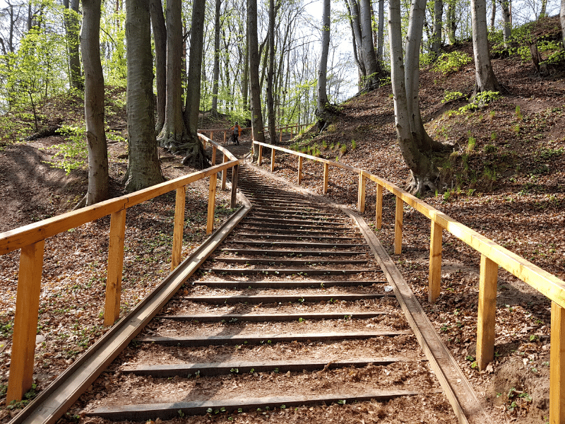

Trójmiejski Park Krajobrazowy to obszar o powierzchni ponad 3,5 tysiąca hektarów, rozciągający się na terenie Gdańska, Gdyni i Sopotu. Jego celem jest ochrona i zachowanie naturalnego dziedzictwa oraz stworzenie warunków do aktywnego wypoczynku mieszkańców i turystów. Park ten stanowi oazę spokoju, w której można uciec od miejskiego zgiełku i cieszyć się pięknem przyrody.
Zdjęcia Trójmiejskiego Parku Krajobrazowego
Zapraszamy do obejrzenia naszej galerii zdjęć, które oddają urok i różnorodność Trójmiejskiego Parku Krajobrazowego. Znajdziesz tutaj malownicze widoki, zielone aleje, tajemnicze lasy oraz unikatową florę i faunę. Każde zdjęcie przeniesie Cię w inny zakątek tego niezwykłego obszaru.